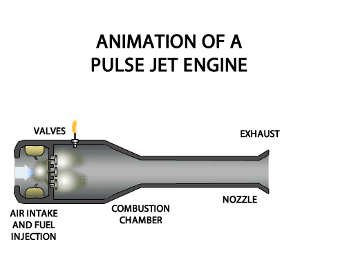

Introduction
A pulsejet engine is a type of jet engine that operates by producing pulses of combustion. Unlike conventional jet engines, pulsejets are simpler in design, lacking moving parts like turbines, and generate thrust through rapid bursts of combustion. They are known for their simplicity and low-cost construction.
Pulsejets were widely used during World War II, notably in the German V-1 flying bomb. Their design, however, has limited their use in modern aviation due to their high fuel consumption and noise levels.
How It Works
The basic operation of a pulsejet is based on the combustion of air and fuel in short bursts. The engine consists of a combustion chamber where fuel is mixed with compressed air and ignited. This results in an explosion that pushes air through the exhaust nozzle, creating thrust.
Pulsejets are unique in that they operate through periodic cycles, with air being drawn into the engine, ignited in a combustion pulse, and then ejected at high speed. This "pulse" of energy is what drives the engine.

Components of a Pulsejet
- Intake Valve: Opens and closes to allow air to enter the combustion chamber.
- Combustion Chamber: Where air and fuel are mixed and ignited to create a burst of pressure.
- Exhaust Nozzle: Expels the pressurized gases at high speed to generate thrust.
- Pulse Tube: The area where the pressure wave is formed as part of the combustion cycle.
Applications of Pulsejet Engines
Pulsejet engines, despite their limitations, have had a significant impact on history and have been used in the following applications:
- V-1 Flying Bombs: Pulsejets were used in the German V-1 flying bomb during World War II.
- Experimental Aircraft: Some experimental aircraft used pulsejets due to their simplicity and low weight.
- Model Rocketry: Pulsejets are sometimes used in model rocketry, where small, simple engines are needed.
- Hobby and DIY Projects: DIY enthusiasts often build pulsejets for fun, science experiments, or small-scale propulsion systems.
Advantages of Pulsejet Engines
- Simple design with no moving parts, making them low-cost and lightweight.
- High thrust-to-weight ratio, especially for small-scale applications.
- Relatively easy to construct, making them suitable for hobbyists and experimental projects.
- Can operate at high speeds when designed correctly, with potential for supersonic speeds in certain conditions.
Disadvantages of Pulsejet Engines
- Excessive noise due to the nature of the combustion pulses, making them impractical for many civilian applications.
- Poor fuel efficiency, especially when compared to modern turbojet or turbofan engines.
- Limited operational range and speed, which restricts their use to small-scale or experimental applications.
- High vibration and mechanical stresses that can lead to maintenance issues over time.